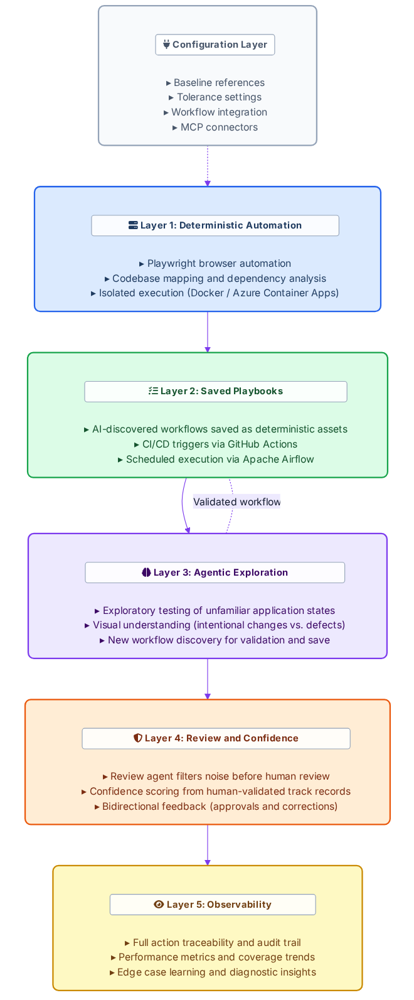
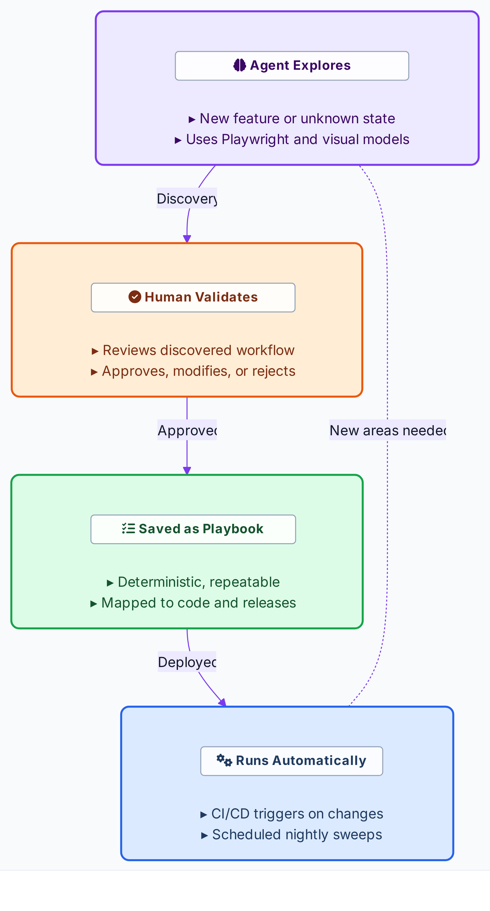
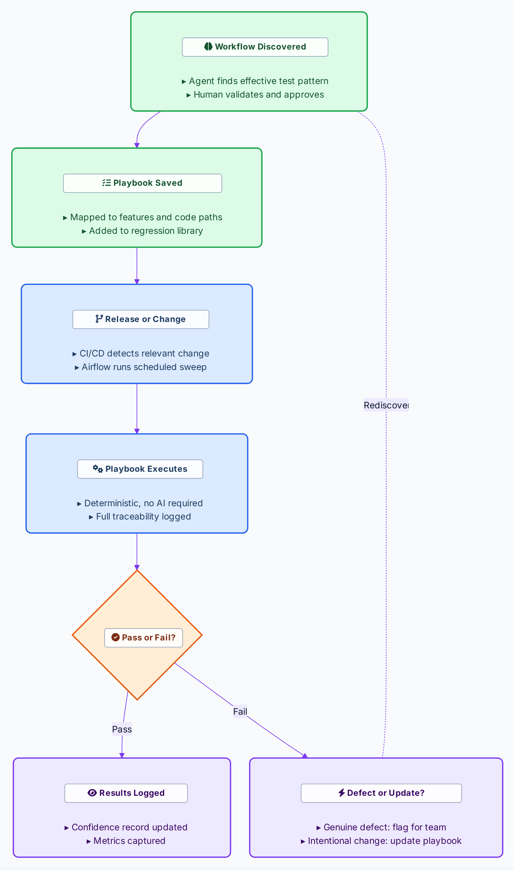
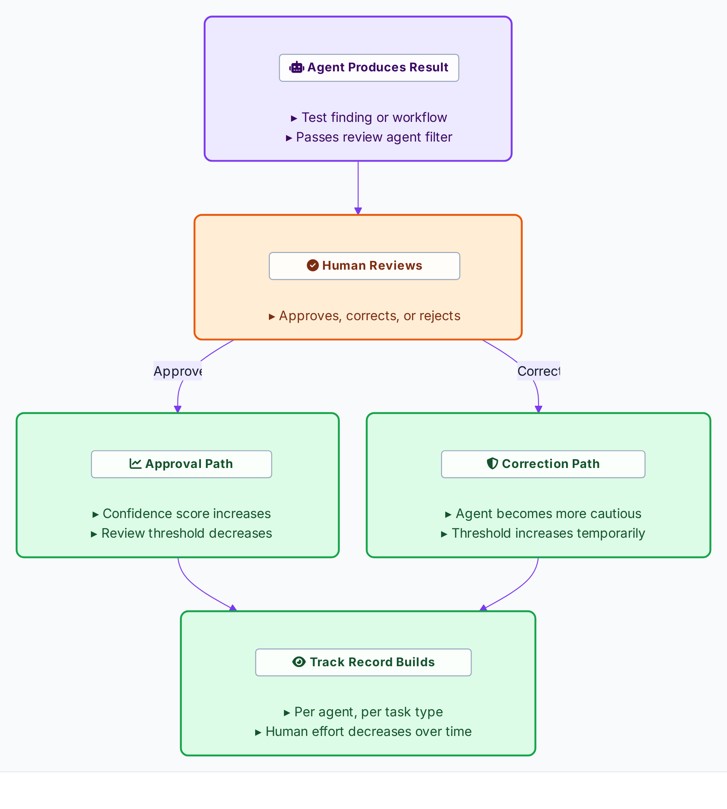

The platform is organized in five layers. The lower layers are deterministic and predictable. The upper layers introduce intelligence. This separation means the foundation operates reliably independent of AI performance, and the AI layer adds capability without introducing variability into the critical path.
Playwright drives all browser interaction deterministically: navigating pages, capturing screenshots, comparing visual states, and interacting with UI elements. There is no AI interpretation in the browser action itself. Playwright handles desktop and mobile viewports, integrates natively with cross-browser testing infrastructure, and is Microsoft-native, aligning with Azure environments.
The platform maintains a deterministic map of the application under test: how different parts of the codebase relate to each other, which UI components depend on which code paths, and which visual tests are relevant to which changes. This mapping extends beyond surface-level file associations to recursive downstream dependencies. A change in one module triggers tests for everything that module affects, not just the module itself. This feeds directly into CI/CD integration: when code changes ship, the platform identifies which tests to run rather than executing the entire suite or relying on manual selection.
All test execution occurs in isolated environments. Docker containers provide clean, reproducible execution states during development and testing. In production, this translates to Azure Container Apps with compute allocated based on actual demand.
Once an effective testing workflow has been discovered and validated, it is saved as a deterministic playbook: an exact, repeatable sequence of steps, assertions, and validation criteria. Playbooks do not require AI to execute. They are tied to the codebase and mapped to specific features, UI components, and code paths.
When a release ships or a code change merges, the platform knows which playbooks are affected and runs them automatically. If a feature changes intentionally, the associated playbooks can be updated or retired by the team. Tests do not break on deployment unless the underlying behavior genuinely changed.
Scheduled execution through Apache Airflow handles nightly regression suites, post-deploy validation sweeps, and periodic production monitoring. CI/CD integration through GitHub Actions handles event-driven test triggers on code changes, giving development teams a seamless experience within their existing workflow. The accumulated playbook library grows over time and represents a compounding asset.
When the platform encounters a new feature, an unfamiliar application state, or a testing objective that no existing playbook covers, an agentic workflow takes over. The agent uses Playwright for browser interaction, visual comparison models for understanding what it sees, and design file references for baseline comparison to explore, discover anomalies, and construct new testing workflows.
Visual understanding models distinguish between intentional design changes and genuine defects. A button that moved slightly due to a layout adjustment is not the same as a button that disappeared. This contextual judgment reduces false positives. At scale, automated visual consistency exceeds what human reviewers can maintain, particularly across large volumes of pages, variants, and devices where attention fatigue degrades accuracy.
When an agent discovers a workflow that successfully validates a testing objective, that workflow becomes a candidate for Layer 2. Once validated by a human reviewer, it is saved as a deterministic playbook. This cycle makes the platform self-improving: AI explores, validated discoveries become deterministic assets, the library grows, and the need for exploration decreases for known areas while remaining available for new features.
Before any agent-generated result reaches a human, it passes through a review layer. A dedicated review agent evaluates output for quality, relevance, and actionability. Results that are noise (false positives, known acceptable variations, duplicate findings) are filtered. Only findings that meet a quality threshold are surfaced to human reviewers.
Confidence scoring operates across the entire platform. Every agent maintains a track record built from human-validated outcomes. Approvals reinforce patterns and lower thresholds; corrections raise thresholds and increase caution. This bidirectional feedback ensures the system calibrates itself to real-world accuracy standards. Agents do not assess themselves or each other. Confidence scores are derived from human-validated outcomes and defined performance indicators.
Full visibility into all layers. Every action is traceable: which agent performed it, what tools it used, what environment it operated in, what code version was being tested, and the outcome. The platform surfaces aggregate data on performance trends, edge case patterns, confidence trajectories, and playbook coverage metrics. When tests miss something, those edge cases are captured and fed back as patterns to watch for in the future, expanding the platform's awareness over time.
Designed for decision-makers: This observability layer is built for the organizational transition already underway: quality engineering leadership moving from hands-on engineering to decision-making and oversight. The platform provides the evidence base needed to manage automated testing operations with confidence.

The mechanism through which the platform converts AI-discovered value into permanent, reliable automation. Playbooks are the platform's core long-term asset.

An agent is given a testing objective. It uses Playwright to interact with the application, visual comparison to validate what it sees, and design or content references as baselines. Through exploration, it finds a sequence of actions that validates the objective.
The discovered workflow is presented to a reviewer. The reviewer can approve it as-is, modify steps, or reject it. Approval converts the workflow into a saved playbook.
Saved playbooks execute without AI. They run the exact sequence of actions, capture the exact screenshots, and evaluate the exact assertions that were validated during discovery.
Playbooks are associated with the code, features, and UI components they validate. When a release ships, the platform identifies which playbooks are relevant and executes them. If a playbook fails because the underlying feature genuinely changed, the team can update the playbook or allow the agent to rediscover a new workflow. If a playbook fails for any other reason, that is a defect signal.
Playbooks are assets owned by the teams, not by the AI. Teams can review the full sequence of actions in any playbook, edit steps, add assertions, adjust tolerances, or retire playbooks that are no longer relevant. The platform makes testing more efficient without removing human governance over what is tested and how.

The layered architecture is identical for all consumer groups. What differs is how each team configures the platform across four dimensions.
QE compares current application state against prior state. Development teams compare rendered UI against Figma design specifications. UI/UX compares against defined component standards with configurable tolerance. Content production compares published content against expected content state. The same visual comparison engine handles all four; the baseline input is the configuration variable.
The UI/UX team may require pixel-level precision with explicit thresholds. QE exploratory testing operates with broader tolerance to focus on functional anomalies. Content validation focuses on whether the right content appears in the right place. Tolerance is adjustable per team, per test type, per component, or per page.
QE receives test reports and anomaly logs integrated with their testing pipeline. Development teams receive feedback within their development workflow, triggered through CI/CD on code changes. UI/UX receives threshold-based alerts routed through an approval workflow. Content production receives validation reports tied to their publishing pipeline.
Teams that work with Figma get a connector via Model Context Protocol (MCP) that allows the platform to reference design files as baselines. Teams that work with content management systems get publishing pipeline connectors. Connectors for Canva, WordPress, and other tools are available. Each new connector expands capabilities for all teams.
All teams and leadership access the platform through a centralized interface that provides unified visibility into test status, playbook management, configuration settings, and performance metrics. This hub consolidates what would otherwise require separate custom tools for each consumer group, reducing technical debt and ensuring that every team operates from the same data. The hub integrates with existing code repositories and single sign-on infrastructure, scoped to each user's role and responsibilities.
Human involvement is a design feature that makes the system trustworthy. The platform follows a reinforcement-based confidence model that earns trust incrementally through validated outcomes.

In the initial phase, human reviewers validate all agent-generated results and newly discovered workflows. Each validated success builds the agent's track record. When a human approves a finding, that approval reinforces the pattern and lowers the threshold for future human review of similar findings. When a human rejects a finding or corrects an agent, the correction feeds back to increase caution in that specific area, and the confidence threshold for that task type increases temporarily until validated through subsequent successful runs.
Agents do not assess themselves or each other. Confidence scores are derived from human-validated outcomes and defined performance indicators, not from agent self-evaluation. This is a deliberate design choice: agent self-assessment tends to oscillate between extreme optimism and extreme pessimism rather than producing calibrated judgments. Human expertise remains structurally necessary for course corrections.
The result is a system where human effort decreases naturally as trust is earned. The human role transitions from reviewing every result to overseeing the system's overall health, intervening on exceptions, and making course corrections when agents drift.
System autonomy, not autonomous systems: The platform is a system of coordinated components (deterministic processes, agentic capabilities, human oversight, and observability) that collectively achieves autonomous behavior while remaining fully traceable and governable. No single agent operates independently or without oversight. The autonomy is a property of the system's design, not of any individual component within it.
Full visibility into platform operations, designed for the transition from hands-on quality engineering to decision-making and oversight.
Every action the platform takes is logged: which agent performed it, what tools it used, what environment it operated in, what code version was being tested (tied to the specific commit), screenshots captured during execution, and the outcome of each validation check. This is the same standard applied to human QE teams and provides the audit trail that enterprise quality engineering requires.
Beyond individual action tracing, the platform surfaces aggregate data: agent performance trends, test pass rates over time, edge case patterns, confidence score trajectories, and playbook coverage metrics. This data answers the question of whether the testing system is healthy, accurate, and improving rather than whether individual tests passed.
When the system is mature, the most interesting data is the edge cases. Are remaining failures because the system is too strict? Because the test criteria need updating? Because genuine defects are being found? When tests miss something, those edge cases are captured and fed back into the system as patterns to watch for in the future, even in situations that are not identical to the original miss. This learning loop expands the platform's awareness over time, complementing the confidence scoring mechanism that operates at the individual agent level.
Performance and framework: When improvement plateaus, the constraint is typically in the framework and the deterministic foundation, not in the AI models. Investing in framework quality (the deterministic layer, the codebase mapping, the feedback loops) yields more than investing in better models. This insight informs the platform's architecture: the deterministic layers are where the most impactful improvements are made.
The platform operates across nonprod preview and production environments with different behavioral modes in each, enforced at the tool access level.
Agents operating in production are restricted to observation: they can navigate, capture screenshots, compare visual states, and report findings. They cannot modify data, submit forms, click purchase buttons, or alter application state in any way. This restriction is enforced at the tool access level, not through behavioral instructions to the agent. The platform adapts its permission model based on the environment it is operating in.
In designated sandbox environments, destructive actions can be explicitly enabled for testing scenarios that require interaction: form submissions, checkout flows, account creation, content publishing verification. This is a deliberate opt-in, not a default. The sandbox mode enables comprehensive testing of interactive workflows while keeping production fully protected.
The nonprod preview environment, where A/B testing is conducted, presents a specific challenge: the same page may render differently depending on which variant is active. The platform's comparison logic must accommodate variant-aware validation to avoid flagging intentional A/B test differences as defects. The configuration layer allows variant-aware baselines so that each variant is compared against its own expected state rather than a single canonical layout.
Agents automatically adjust their behavior based on the environment they operate in. In nonprod preview, agents perform pre-release validation with full interaction capability. In production, agents perform post-release anomaly detection in observation-only mode. The environment context is part of every agent's configuration, and the permission boundaries are enforced before any action is taken.